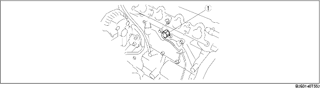

• Installed on the front of the cylinder block.

.
• Converts knocking vibration into a voltage value using the piezoelectric effect of the semi-conductor, and sends the value to the PCM.
• The piezoelectric effect is a phenomenon in which a difference in electric potential is produced on the surface of a piezoelectric element by the application of tensile load or pressure from a certain direction. Tensile load and pressure applied to the knock sensor originates from cylinder block vibration caused by abnormal combustion in the engine. The difference in electric potential, which results from the strain by the vibration, is sent to the PCM as a knocking signal.